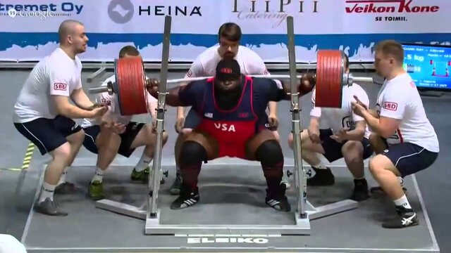
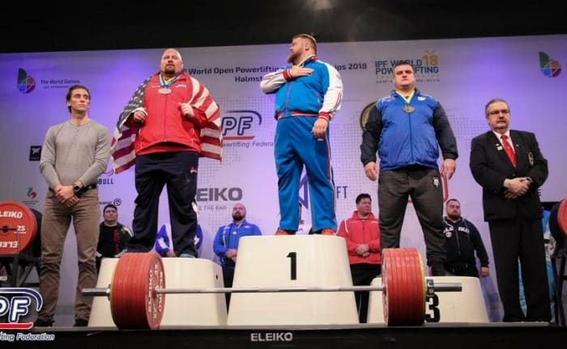

In a powerlifting competition, athletes compete in three main lifts: squat, bench press, and deadlift. Each lifter is allowed three attempts at each lift, and the heaviest successful attempt in each lift is combined for a total score. Competitors are usually divided into weight classes, and there are also age and skill divisions. During the competition, lifters are given a specific amount of time to complete their lifts, and they must adhere to strict rules regarding technique and execution. Judges closely observe each lift to ensure that it meets the established standards, such as reaching proper depth in the squat, maintaining a stable position in the bench press, and locking out the deadlift. The lifter with the highest total weight lifted in their respective category is declared the winner. Powerlifting competitions often feature an electrifying atmosphere, with athletes and spectators cheering and encouraging each other throughout the event.
The five most important points of powerlifting include:
Proper Form and Technique: Maintaining correct form and technique is crucial to prevent injury and maximize performance. This includes maintaining a strong and stable posture throughout each lift.Progressive Overload: Gradually increasing the amount of weight lifted over time is essential for continuous strength gains. This principle is fundamental to powerlifting training.
Periodization: Implementing a structured training plan that includes periods of varying intensity, volume, and recovery is key to long-term success in powerlifting.
Nutrition and Recovery: Adequate nutrition and sufficient recovery are vital for muscle growth, strength development, overall performance. This includes consuming enough protein, carbohydrates, and healthy fats, as well as prioritizing rest and sleep.